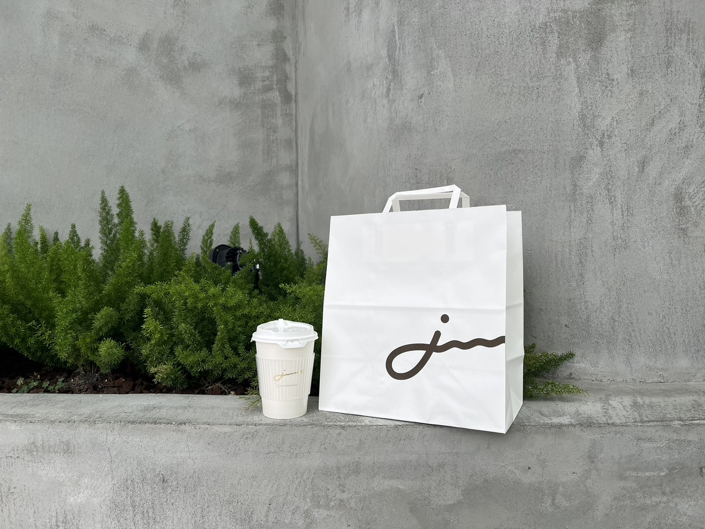

關於我們
一口甜味，一份溫暖

關於階梯 一步一腳印的甜點旅程
「階梯」不只是一家甜點店， 它是一個象徵——關於成長、努力與溫柔堅持的象徵。 我們相信，所有美好的事物都需要時間醞釀。 就像爬上一道階梯，不必急、不必跳， 只要一步接著一步，誠實地往前走， 終究會在某個轉角，遇見屬於自己的風景。 每一道甜點，都是我們用心走過的痕跡。 從選材到製作，從空間到氣氛， 我們不追求華麗，而在意每個細節是否有溫度。 我們想讓你知道，慢慢來，其實也可以很美。 來「階梯」吧， 讓日子不再只是過，而是被記得。